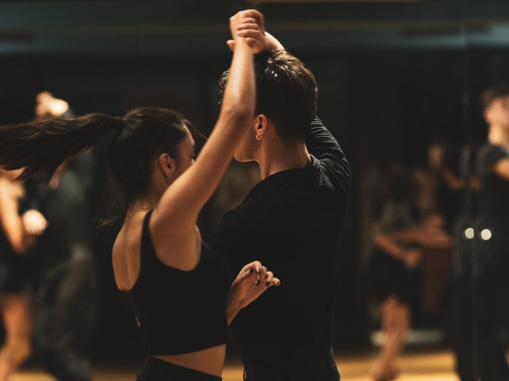
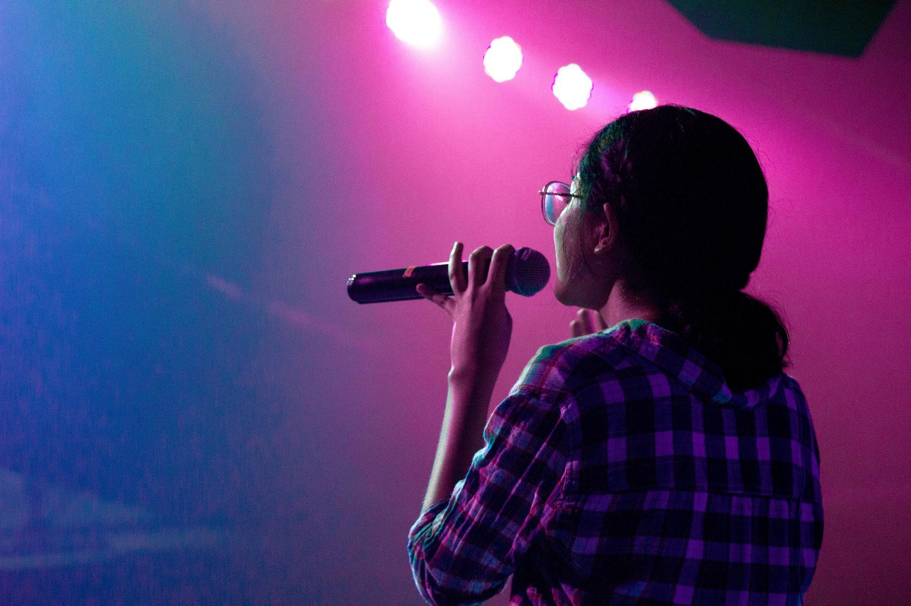

MIS HOBBIES
 Amo el baile, dibujar, cantar y pasar el rato con mis amigos El baile es algo que desde que tengo memoria, me emociona, me hace feliz, mi sueño es meterme a una academia de baile, con la hida de adultl que uno debe tener he parado en este hobbie pues entre estudiar, trabajar, emprender, ser hija e intentar tener vida social, no me da el tiempo para hacerlo, pero haces unos años atras me aprendía las coreografías de kpop, y en mi niñes las de menudo, espero poder retomarlo. El dibujo me ha ayudado en los momentos que me siento mal, que no me puedo expresar o no quieo contarselo a nadie, me gustaría ser una ilustradora reconocida pero voy paso a paso. Cantar y pasar el rato es lo que hago mas seguido, aunque debo aclarar que canto a solas y que estoy consciente de que no es mi fuerte.